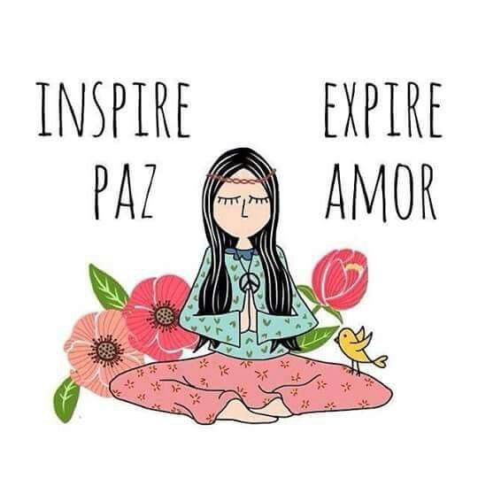

Hola, mi nombre es carlos cortez, tengo 26 años, soy venezolano viviendo actualmente en la ciudad de montevideo en uruguay, muy apasionado por el mundo automotriz, fanático del beisbol y de los navegantes del magallanes. Me encantaria salir adelante tanto por mi progreso propio como el de mi familia.
En lo personal, siempre e pensado que tengo el don de la palabra por ende se me hace relativamente fácil conversar con las personas al igual que escucharlas y poder entablar algún tipo de diálogo constructivo sin caer en algun tipo de provocacion o problema.
A la ves que soy conversador, tambien soy una persona muy timida al punto que muchas veces para conversar con personas (sobre todo femeninas) me cuesta mucho pero siempre trato igual de hacerlo para ir venciendo ese miedo que me dificulta eso Además de eso, sufro de inseguridad lo cual estoy siempre tratando tratando de disminuirla pensando de manera detenida determinados actos que me puedan causar alguna inseguridad en mi mismo
